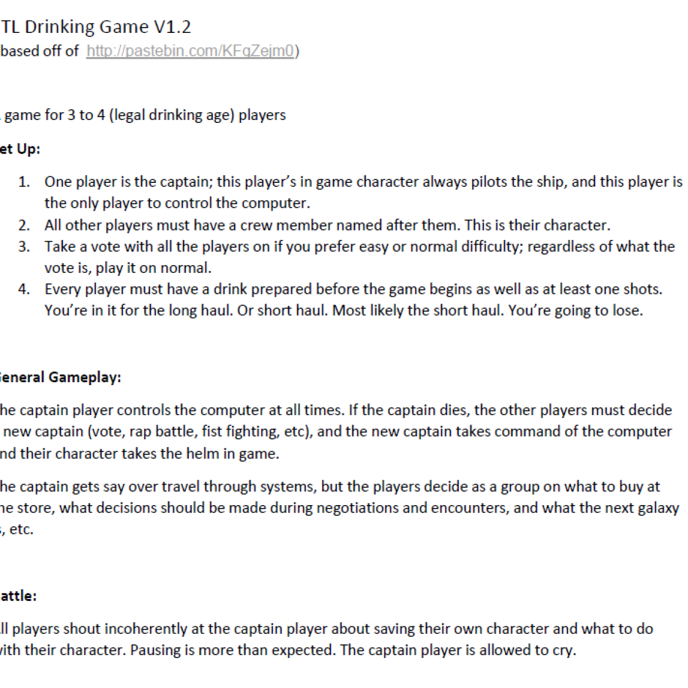

FTL Drinking Game V1.2
Link to PDF version of FTL Drinking Game V1.2
(based off of http://pastebin.com/KFqZejm0)
A party game for 3 to 4 (legal drinking age) players.
Requires FTL to play.

Game 17/100
FTL Drinking Game V1.2 Link to PDF version of FTL Drinking Game V1.2 (based off of http://pastebin.com/KFqZejm0 ) A party game for 3 to 4 (legal drinking age) players.
FTL Drinking Game V1.2
Link to PDF version of FTL Drinking Game V1.2
(based off of http://pastebin.com/KFqZejm0)
A party game for 3 to 4 (legal drinking age) players.
Requires FTL to play.